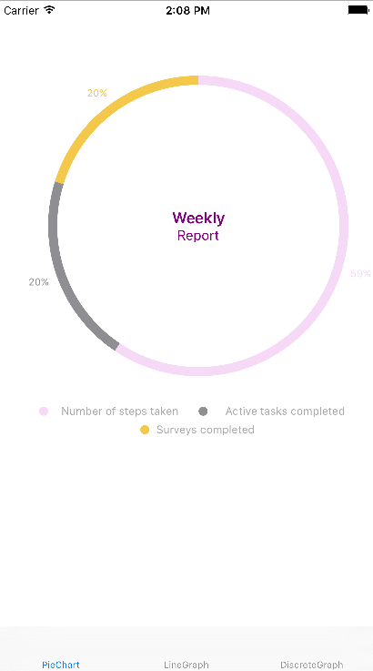
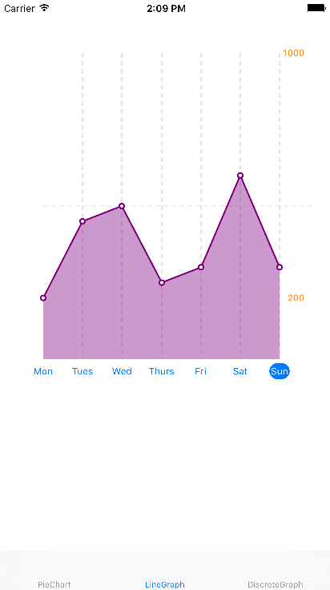
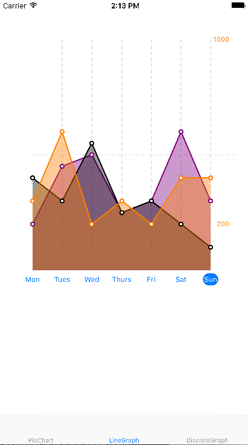
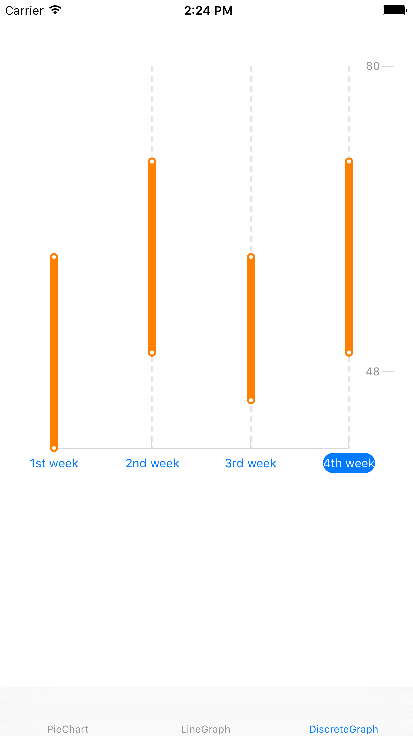
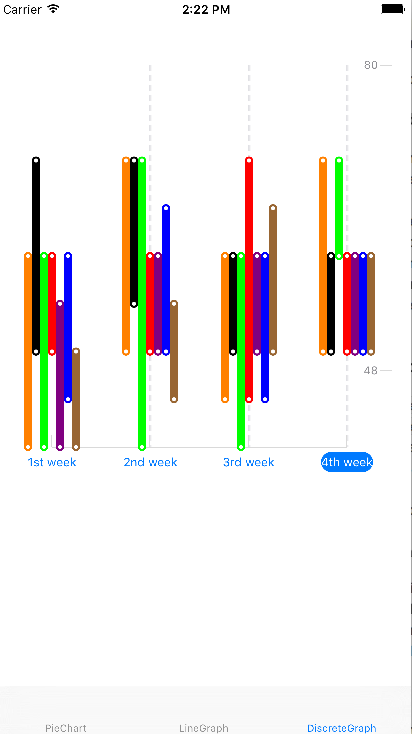

这些材料仅供参考，这些建议并不能保证完全符合法律法规。您应当联系一名律师，以获取关于开发研究类应用的相关建议，以及其他适用的法律法规。
图表
ResearchKit 框架提供可以让你用图表来显示数据的的类。用这种形式来表现信息能帮助使用者更好的理解你的数据，同时可以可视化的展现你的独到见解。
你可以用 ResearchKit 类来创建五种类型的图表
- 饼图 (ORKPieChartView).饼图是分成几块的圆型图表，这对于展现特定数据占整体的规模来说非常重要。比如，一个基于任务的研究应用会使用饼图来展示使用者的日常锻炼有多少已经完成了。
- 折线图 (ORKLineGraphChartView). 折线图是一种用一系列以直线相连的店来展示信息的图表。比如，你可能会用折线图去表示使用者一周中每天走路的步数。
- 多重线图. 多重线图是一种可以随着时间的发展去比较大量数据集合的非常有用的线图。
- 散点图 (ORKDiscreteGraphChartView). 散点图以一系列数据点来展示信息，每个系列的点是一系列点，这些点都被根据横坐标平均的放置在轴上。散点图是在一定范围内展示数据非常好的选择，比如需要展示过去一个月内使用者的心率的时候。
- 散点图有很多点。散点图有很多点群，这些点群之间是不连续的，这对显示不同类型且同时发生的离散值很有用 (比如，在一张单独的散点图上查看使用者的血压和心率)
每一种类型的图表都在下面有对应的展示
饼图
折线图
多重线图
散点图
有着多个不同点的散点图
将图表添加到你的APP之中去
图表对象依附于MVC设计模式，MVC设计模式是数据（Model），数据的表达（View），被要求来调整和表达数据和数据表现形式的（Controller）。这种设计模式在iOS中是极为普遍的，同时这是图表属性不可或缺的一个部分。
在一个研究应用中，图表对象（View）必须与负责提供数据的数据源对象（Model）相连。之后，图表由视图控制器对象（Controller）所展现，这个对象与数据源和数据表达都有联系。
为了给你的应用添加图表，首先你要创建一个数据源类以提供数据。之后创建图表对象（例如，一个 ORKPieChartView 对象 ）与数据源相连接，以你所需要的方式来调整图表对象，同时可以在视图看控制器中显示它了
第一步： Step 1: 实现数据源协议
数据源提供了创建图表对象所需要的数据。这种联系是通过对象之间的一种被称作“协议（protocol）”的约定义务来实现的。协议是有一个名字和一系列数据源被约定好实现方式的方法组成的。
协议中有两种方法：required 和 optional 方法。正如你所猜想的，你必须在数据源中实现 required 方法，同时你可以选择去实现 optional 方法。 在 ResearchKit 的图表中，协议中的一部分 required 方法提供点（或者片段）的数量，而其他 required 方法为图表对象提供每个点的值。协议中的可选方法被用来进一步的设定数据，比如 x 轴或者线段的颜色。
为了给图表提供数据，一个数据源必须拥有两种协议： ORKGraphChartViewDataSource 协议（为了有图的表）和ORKPieChartViewDataSource（为饼图而生）。在某些特定的去实现这些协议的例子中，请参见 给你的应用添加折线图和散点图 and 给你的应用添加饼图.
第二步：创建一个图表对象同时将之添加到视图控制器
为了表现图表中的数据，创建一个图表对象，比如 ORKPieChartView 或者 ORKLineGraphChartView。为了实现这样的效果，我们首先要在 UIViewController 中创建一个 UIView 对象，同时将普通的 View 类修改成你所需要的 ResearchKit 类。
之后，使用 IBOutlet 来将图表视图与你的代码相连接。你的代码和你的视图的连接将会允许你可以根据需求更新你图表中的内容，图表的模样同理。
最后，连接图表视图和你的数据源，于是你的图表就可以访问数据了。举个例子，为了连接你的饼图对象和一个一般的数据源，你可以使用这样的代码：
// 将饼图数据对象与数据源相互连接
步骤三（可选）：调整图表对象
尽管 ResearchKit 的图表是可以直接与你的数据一起使用的，你也可以很轻松的修改他们以与你的应用适配。每一个图表对象都拥有几个属性让你来修改它的外观。比如你可以给在饼图的部分饼上做个注释，这里需要在饼图的数据源类中实现 titleForSegmentAtIndex 方法，就像下面这个例子一样：
func pieChartView(pieChartView: ORKPieChartView, titleForSegmentAtIndex index: Int) -> String {
switch index {
case 0:
return "Steps taken"
case 1:
return "Tasks completed"
case 2:
return "Surveys completed"
default:
return "task \(index + 1)"
}
}
上面的代码显示了饼图中这些注释：
想了解饼图，折线图和散点图对象可调整的属性，参见 ORKPieChartView, ORKGraphChartView，和 ORKDiscreteGraphChartView.
将饼图添加到你的应用之中
给饼图提供数据的数据源对象有 ORKPieChartViewDataSource 协议。为了建立饼图，你需要知道饼图要有多少个部分以及每个部分的值。
为了具体的说明饼图中到底有多少个部分，实现 numberOfSegmentsInPieChartView 方法，返回一个能表达饼图中有多少个部分的整数。举个例子，以下的代码具体的说明了一个有三个部分的饼图：
func numberOfSegmentsInPieChartView(pieChartView: ORKPieChartView) -> Int {
return 3
}
在你可以在饼图中画那些部分之前，你需要去说明每个部分的值。为了提供每个部分的值，我们需要实现 valueForSegmentAtIndex 方法。
以下的值是一些百分率的值，他们的和必须是100。比如以下的代码返回了 50，30，20 的值，分别对应编码为0，1，2的饼图部分。
func pieChartView(pieChartView: ORKPieChartView, valueForSegmentAtIndex index: Int) -> CGFloat {
switch index {
case 0:
return 60.0
case 1:
return 25.0
case 2:
return 15.0
}
}
你可以在饼图中使用可选方法来帮助你来调整图表中数据的显示方式。比如，你可以具体的说明每个部分的颜色和标题。(如果要学习更多的如何使用饼图中数据源协议的这些属性来调整你的图，请参阅 ORKPieChartViewDataSource.)
这里是一个饼图的例子，其数据源类同时包含了 requied 和 optional 方法：
class PieChartDataSource: NSObject, ORKPieChartViewDataSource {
// 说明了是那种不同的颜色
let colors = [
UIColor(red: 217/225, green: 217/255, blue: 217/225, alpha: 1),
UIColor(red: 142/255, green: 142/255, blue: 147/255, alpha: 1),
UIColor(red: 244/255, green: 200/255, blue: 74/255, alpha: 1)
]
// 三个部分每个部分的值
let values = [60.0, 25.0, 15.0]
// Required 方法
func numberOfSegmentsInPieChartView(pieChartView: ORKPieChartView ) -> Int {
return colors.count
}
func pieChartView(pieChartView: ORKPieChartView, valueForSegmentAtIndex index: Int) -> CGFloat {
return CGFloat(values[index])
}
// Optional 方法
// 给出了饼图中每个部分的值
func pieChartView(pieChartView: ORKPieChartView, colorForSegmentAtIndex index: Int) -> UIColor {
return colors[index]
}
// 给出饼图中每个部分的标题
func pieChartView(pieChartView: ORKPieChartView, titleForSegmentAtIndex index: Int) -> String {
switch index {
case 0:
return "Steps taken"
case 1:
return "Tasks completed"
case 2:
return "Surveys completed"
default:
return "task \(index + 1)"
}
}
}
在你创建一个饼图数据源类之后，创建一个饼图对象来表示他从数据源对象中收到的数据。举个例子，下面的代码说明了如何去创建一个饼图对象，将值连接到数据源，最后再去调整它的一些属性：
// 创建一个饼图对象
@IBOutlet weak var pieChartView: ORKPieChartView!
override func viewDidLoad() {
super.viewDidLoad()
// 将饼图对象连接到数据源
pieChartView.dataSource = pieChartDataSource
// 可选的可调整的结构
pieChartView.showsTitleAboveChart = false
pieChartView.showsPercentageLabels = true
pieChartView.drawsClockwise = true
pieChartView.titleColor = UIColor.purpleColor()
pieChartView.textColor = UIColor.purpleColor()
pieChartView.title = "Weekly"
pieChartView.text = "Report"
pieChartView.lineWidth = 10
pieChartView.showsPercentageLabels = true
}
下面的屏幕截图由这个部分的代码所创造

添加一个折线图或者一个散点图到你的应用中去
添加数据到折线图或者散点图之中是需要实现 ORKGraphChartViewDataSource 协议中的方法的。这里有几个方法，你必须正确的去实现他们。
折线图和散点图可以显示一个或多个标绘图，标绘图在图形学上是指两个变量之间的关系。
一开始，我们需要实现 graphChartView:numberOfPointsForPlotIndex: 方法。这里，你会返回一系列特定的标绘图指数（一张图片可能会有不止一个与其相关的标绘图）的点。
之后，实现 graphChartView:pointForPointIndex:plotIndex: 方法。在此方法中，你会返回 ORKRangedPoint （这代表一定范围内被用于标绘图的点）对指定点指数和标绘图指数。
一个你可以实现的 optional 方法是 numberOfPlotsInGraphChartView: 。这里，你可返回一系列之前图片的标绘图。如果你不去实现这个方法，标绘图就会有问题。
其他 Optional 方法允许你提供标题的同时也允许你设置 Y 轴的最大和最小值。
这里是一个例子，此处有一个折线图数据源类。这个类返回将在图表上显示出来的两个标绘图使用的五个点。：
class LineGraphDataSource: NSObject, ORKGraphChartViewDataSource {
var plotPoints =
[
[
ORKRangedPoint(value: 200),
ORKRangedPoint(value: 450),
ORKRangedPoint(value: 500),
ORKRangedPoint(value: 250),
ORKRangedPoint(value: 300),
ORKRangedPoint(value: 600),
ORKRangedPoint(value: 300),
],
[
ORKRangedPoint(value: 100),
ORKRangedPoint(value: 350),
ORKRangedPoint(value: 400),
ORKRangedPoint(value: 150),
ORKRangedPoint(value: 200),
ORKRangedPoint(value: 500),
ORKRangedPoint(value: 400),
]
]
// Required 方法
func graphChartView(graphChartView: ORKGraphChartView, pointForPointIndex pointIndex: Int, plotIndex: Int) -> ORKRangedPoint {
return plotPoints[plotIndex][pointIndex]
}
func graphChartView(graphChartView: ORKGraphChartView, numberOfPointsForPlotIndex plotIndex: Int) -> Int {
return plotPoints[plotIndex].count
}
// Optional 方法
// 返回图表视图中点的数量
func numberOfPlotsInGraphChartView(graphChartView: ORKGraphChartView) -> Int {
return plotPoints.count
}
// 设置Y轴的最大值
func maximumValueForGraphChartView(graphChartView: ORKGraphChartView) -> CGFloat {
return 1000
}
// 设置Y轴的最小值
func minimumValueForGraphChartView(graphChartView: ORKGraphChartView) -> CGFloat {
return 0
}
// 给X轴提供标题
func graphChartView(graphChartView: ORKGraphChartView, titleForXAxisAtPointIndex pointIndex: Int) -> String? {
switch pointIndex {
case 0:
return "Mon"
case 1:
return "Tue"
case 2:
return "Wed"
case 3:
return "Thu"
case 4:
return "Fri"
case 5:
return "Sat"
case 6:
return "Sun"
default:
return "Day \(pointIndex + 1)"
}
}
// 返回指定标绘图目录的颜色
func graphChartView(graphChartView: ORKGraphChartView, colorForPlotIndex plotIndex: Int) -> UIColor {
if plotIndex == 0 {
return UIColor.purpleColor()
}
}
}
备注： 离散的图表使用数据源协议，比如折线图就是这样的。所以散点图的数据源类就自然长的和这之上的折线图数据源类很相似。
在你为图表创建一个数据源类之后，你需要创建图表对象以展示数据。比如，下面的代码展示了如何去创建一个折线图对象，将之与上面已经展示过了的数据源相连接，同时修改他的一些属性：
// 创建折线图对象
@IBOutlet weak var lineGraphView: ORKLineGraphChartView!
override func viewDidLoad() {
super.viewDidLoad()
// 将数据源与与折线图视图对象相连接
lineGraphView.dataSource = lineGraphChartDataSource()
// 可选的可调整的结构
lineGraphView.showsHorizontalReferenceLines = true
lineGraphView.showsVerticalReferenceLines = true
lineGraphView.axisColor = UIColor.whiteColor()
lineGraphView.verticalAxisTitleColor = UIColor.orangeColor()
lineGraphView.showsHorizontalReferenceLines = true
lineGraphView.showsVerticalReferenceLines = true
lineGraphView.scrubberLineColor = UIColor.redColor()
}
下面的截图表达了这个部分代码所创建的折线图
为了显示散点图而不是折线图，你可以使用与下面相似的代码来创建一个散点图对象，将之与数据源相连接，同时调整它的一些属性：
// 创建散点图图表视图对象
@IBOutlet weak var discreteGraphChart: ORKDiscreteGraphChartView!
//将数据源与与散点图视图对象相连接
let discreteGraphChartDataSource = DiscreteGraphDataSource()
override func viewDidLoad() {
super.viewDidLoad()
// 将数据源与与折线图视图对象相连接
discreteGraphChart.dataSource = discreteGraphChartDataSource
// 可选的可调整的结构
discreteGraphChart.showsVerticalReferenceLines = true
discreteGraphChart.drawsConnectedRanges = true
}
下面的截图是使用了与之前折线图（在本部分开始处的）一样的数据源的散点图。
在一张图中画出多条线
在默认情况下，图表对象假定一次只会有一个标绘图需要被画出。为了一次在一张图中画出多个标绘图，请使用 numberOfPlotsInGraphChartView 方法，同时要明确指出图中标绘图的数量。这个可选的数据源方法在你需要在一张图中画出多个标绘图的时候是非常有用的。
比如下面的代码就表现出来如何在一张图中画出两个标绘图：
// Optional 方法
func numberOfPlotsInGraphChartView(graphChartView: ORKGraphChartView) -> Int {
return 2
}
给图表添加标题
为了给折线图或者散点图在 X 轴上添加标题，我们需要在数据源中实现 titleForXAxisAtPointIndex 方法，同时返回在 X 轴上每个相邻的分块的标题。至于Y轴，你可以通过 maximumValueForGraphChartView: or minimumValueForGraphChartView: 属性（为了显示图片而不是值，使用 maximumValueImage 和 minimumValueImage 属性）显示他的最大值或者最小值。
下面的代码展示了如何在散点图的 X 轴上显示标题：
func graphChartView(graphChartView: ORKGraphChartView, titleForXAxisAtPointIndex pointIndex: Int) -> String? {
switch pointIndex {
case 0:
return "Jan"
case 1:
return "Feb"
case 2:
return "Mar"
case 3:
return "Apr"
default:
return "Month \(pointIndex + 1)"
}
}
你可以在这里的散点图中看到上面显示标题的的代码的效果：
支持拖拽手势
一般情况下默认的, 图表对象自己就实现了可以被你使用的拖拽手势。当使用者在视图上的图表中拖动的时候，一条线会在离使用者手指落点最近的地方出现，显示这一点的值。
你可以通过实现 ORKGraphChartViewDelegate 协议拓展默认的拖拽手势。图表视图的委托协议在 ORKGraphChartView 对象的限制下传递拖拽手势的发生。
这里有三个可以被实现的 optional 方法：
graphChartViewTouchesBegan:在使用者开始触摸图表视图的时候提醒对象。graphChartView:touchesMovedToXPosition:提供触摸移动时 X 轴的位置。graphChartViewTouchesEnded:在使用者停止触摸图表视图的时候提醒对象。